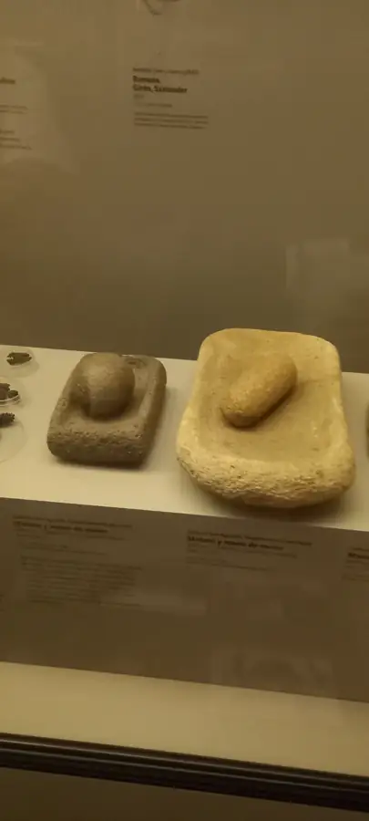

Whole-maize cake on a griddle
A simple, flat cake made from cooked whole maize, water, and a hot surface. Early descriptions from northern South America record stone-ground maize dough and round griddled cakes. The measurements and timings below are modern choices—not a recovered preconquest recipe.

Method
- Soak
Cover the dry whole maize generously with water and soak overnight. Drain. This soak is a modern practical step; it is not specified in the contact-era descriptions.
- Cook and grind
Simmer in fresh water until the kernels are fully tender, roughly 60–90 minutes depending on the maize. Drain and grind while warm to a cohesive, slightly coarse dough. Add warm water a spoonful at a time only if needed.
- Shape
Divide into 4 and pat into round cakes about 1 cm thick. Keep edges together with damp hands. No salt, cheese, or packaged flour is required for this deliberately spare version.
- Griddle
Cook on a hot seasoned griddle over medium heat, turning until both faces have browned and the centers are hot and set, roughly 6–8 minutes a side. Serve warm.
Oviedo’s 1526 account describes wet stone-grinding and leaf-roasted maize dough in Tierra Firme; that bread was a bollo, not explicitly a flat arepa. Galeotto Cey’s 1539–1553 account describes thick round cakes turned on a greased griddle. A Venezuelan cultural account describes cooked maize ground between stones and shaped on a clay budare. These are related observations, not a single intact ancient recipe. The exact sequence and quantities above are editorial reconstruction. See sources.
Sources & credits
These links identify the recipe, historical, and image sources used on this page.
- Gonzalo Fernández de Oviedo · Sumario, ch. IV (1526) ↗
Contact-era description of Indigenous wet grinding and leaf-roasted maize bread; a related form, not this flat cake.
- Galeotto Cey · 1539–1553 passage via IberCultura Viva ↗
Published transcription of thick round maize cakes cooked on both sides on a griddle.
- Venezuela Ministry of Culture · La arepa y sus variantes ↗
Describes cooked maize, stone grinding, and a clay aripo or budare.
- Fecive · Grinding stones, San Agustín ↗
CC0 photograph; illustrative object, not a claim about the specific cakes in this recipe.